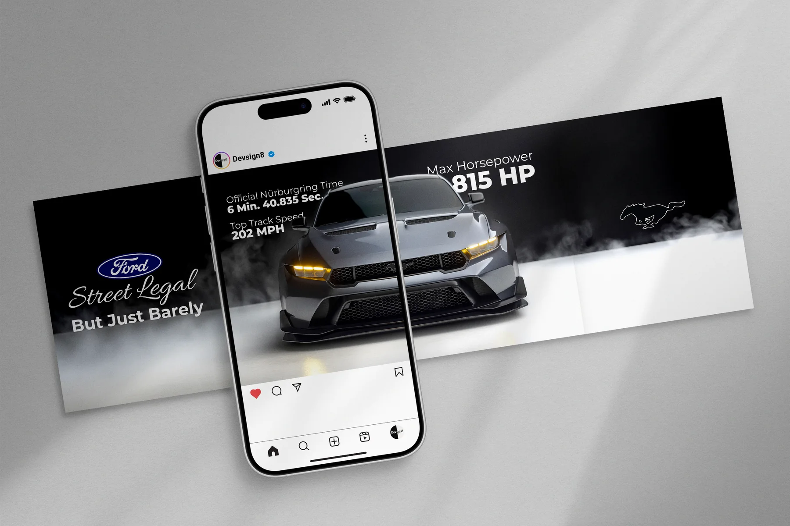
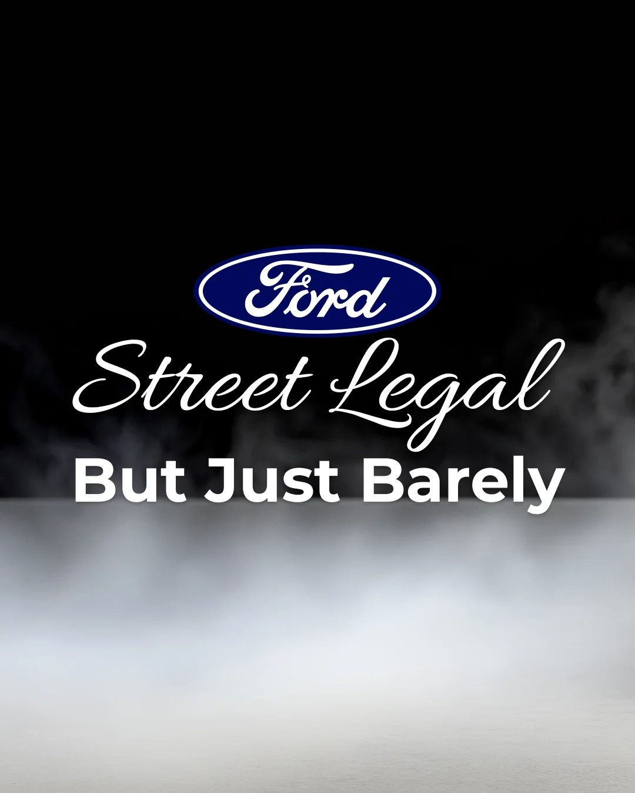
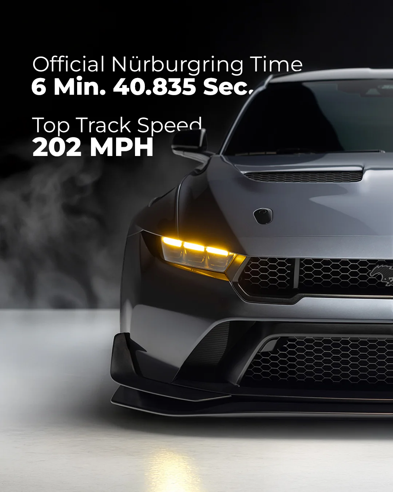

Social
Mustang GTD — Street Legal, But Just Barely
A concept campaign for the Ford Mustang GTD, built as a single continuous artboard and sliced into four 4:5 panels — so the car, the smoke and the horizon line carry across the swipe instead of resetting at every frame. The spec reveal is paced: hook, lap time, horsepower, then the mark alone in the smoke.

Constraints
Designed within
- Four panels at 1080 × 1350 (4:5), Instagram's tallest feed crop
- Artwork must read as one continuous image across the swipe
- Every panel also has to work alone, since the feed may show only the first
- One spec per panel — the pacing is the message


All 4 panels, in swipe order — one continuous artboard, sliced.
Motion
In motion
The 10-second Reel cut — the same smoke, mark and black-to-white transition, paced for a vertical feed.
What happens in this video: Over ten seconds, a Mustang GTD emerges from a white haze — first as a pale silhouette, then sharpening into a dark, low-slung car under a rear wing. The frame inverts to black, the car dissolves back into smoke, and the outline of the running Mustang horse resolves alone above a white floor. Silent throughout.
Like what you see?
I'm open to freelance and full-time work.